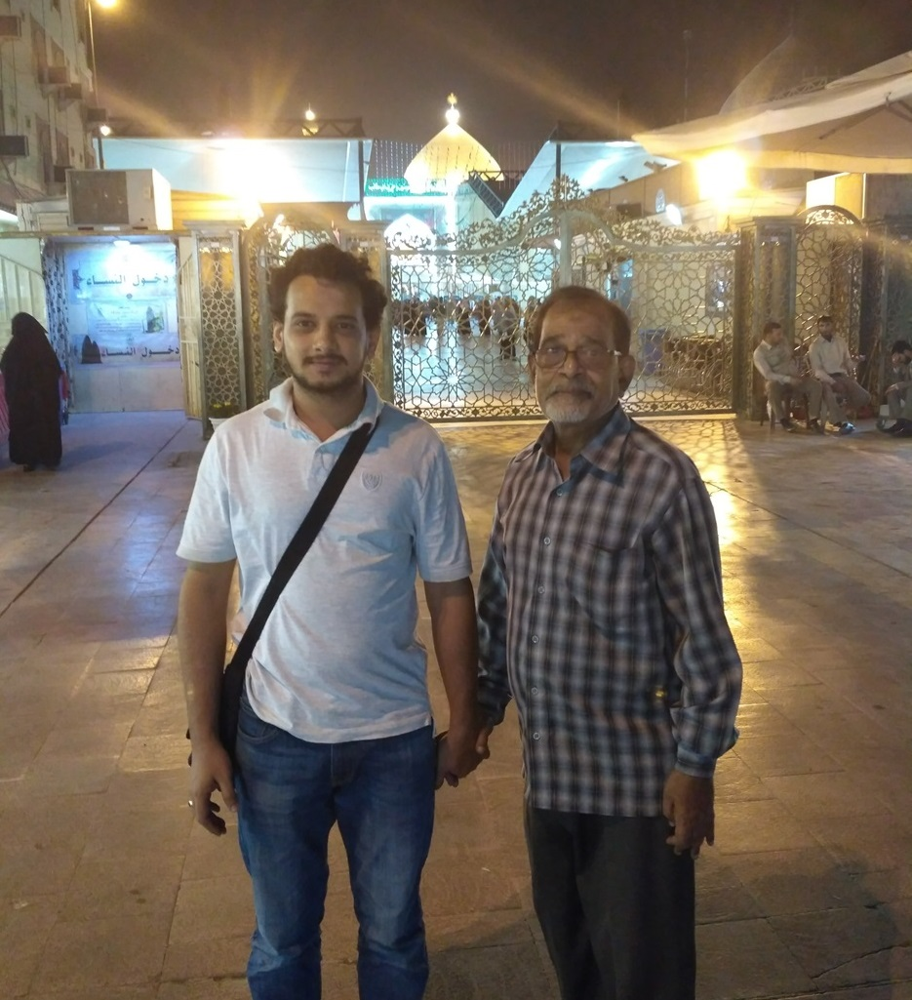

میں نے اس الیکشن میں کیوں حصہ لیا؟
جب میں نے اس الیکشن میں حصہ لینے کا فیصلہ کیا تو یہ کسی عہدے یا شہرت کے لیے نہیں تھا بلکہ اس مسجد سے میری دیرینہ وابستگی کی وجہ سے تھا۔ میں نے اسی مسجد میں پرورش پائی ہے۔ میرے والد بھی اس مسجد سے وابستہ رہے ہیں۔ میں نے وہ دن بھی دیکھے ہیں جب یہ مسجد پتروالی مسجد تھی، اور وہ وقت بھی جب یہ ممبئی کی بہترین مساجد میں شمار ہونے لگی — مغل مسجد اور خوجہ مسجد کے بعد۔ آج میں محسوس کرتا ہوں کہ مسجد کو ہماری زیادہ ضرورت ہے۔ میرے جیسے بہت سے نوجوان خدمت کرنا چاہتے ہیں، مگر بدقسمتی سے ان کے نام ممبر لسٹ میں شامل نہیں ہیں۔ چونکہ میرا نام تھا، میں نے اسے ایک موقع نہیں بلکہ فرض سمجھا۔ زندگی کی کوئی گارنٹی نہیں، اس لیے میں نے استخارہ کیا اور قدم بڑھایا۔ اگر اللہ کی مرضی ہوئی، تو میں خلوص نیت کے ساتھ اپنی کمیونٹی کی خدمت کروں گا ۔
میری تبدیلی کا منصوبہ
اگر مجھے خدمت کا موقع ملا تو میں تین اہم تبدیلیاں لانا چاہتا ہوں — صفائی و دیکھ بھال، جدید ڈیجیٹل نظام، اور مسجد کو ایک کمیونٹی سینٹر بنانا۔
سب سے پہلے میں مسجد کی صفائی پر توجہ دینا چاہتا ہوں۔ گراؤنڈ فلور کے بیت الخلا، پہلی اور دوسری منزل کے وضو خانے، اور محرم کے تبرکات کو باقاعدہ دیکھ بھال کی ضرورت ہے۔ ممبئی کی کچھ دینی اداروں میں خادم کو مسجد کے قریب رہائش دی جاتی ہے تاکہ وہ مستقل طور پر مسجد کے کام میں شامل رہیں۔ ہماری مسجد میں جو کمرہ کرائے پر دیا گیا ہے، اسے ہم مسجد کے خادم کو دے سکتے ہیں تاکہ وہ اپنی فیملی کے ساتھ یہ خدمت انجام دے سکے۔
مسجد کے انتظامی نظام میں شفافیت اور سہولت دونوں کی ضرورت ہے۔ میں خود ایک مرتبہ چندہ دینے گیا تو دفتر بند تھا، اور مجھے دو دن بعد دوبارہ آنا پڑا۔ اس تجربے نے مجھے یہ احساس دلایا کہ دوسرے لوگوں کو بھی ایسی مشکلات پیش آتی ہوں گی۔ میں اپنی پیشہ ورانہ زندگی میں فائلوں اور کاغذی نظام کو ڈیجیٹل بناتا ہوں، اور یہی کام میں یہاں بھی لانا چاہتا ہوں۔
میری تجویز ایک ایسی ویب سائٹ کی ہے جہاں لوگ اپنے موبائل نمبر اور او ٹی پی سے لاگ ان کر سکیں، اپنی ادائیگی کی تفصیل دیکھ سکیں اور آن لائن چندہ دے سکیں۔ نظام خودکار طریقے سے یاد دہانیاں بھیجے گا اور مالی سال کے اختتام پر مکمل مالی رپورٹ ویب سائٹ پر جاری کی جائے گی تاکہ شفافیت برقرار رہے۔
میرا خواب ہے کہ مسجد صرف عبادت تک محدود نہ رہے بلکہ سیکھنے، تربیت اور یکجہتی کا مرکز بنے۔ میں رمضان میں ترجمے کے ساتھ دعاؤں کے پروگرام، بچوں کے لیے سورت یاد کرنے کے مقابلے، نوجوانوں کے لیے قرآنی معلوماتی مقابلے، نکاح اور ازدواجی زندگی کی ذمہ داریوں پر سیمینار، قرآنی قصص پر نشستیں، اور ممتاز شیعہ علماء کی موجودگی میں خصوصی پروگرام شروع کرنا چاہتا ہوں۔ ان پروگراموں سے عوامی شرکت بڑھے گی، اعتماد میں اضافہ ہوگا، اور زیادہ لوگ مسجد سے جڑیں گے۔ فی الحال، ہماری فعال ممبر لسٹ میں صرف ۶۵ افراد ہیں، حالانکہ جمعہ کی نماز میں ۲۰۰ سے ۳۰۰ لوگ نماز پڑھنے آتے ہیں۔ میرا مقصد اس صورتِ حال کو بدلنا اور لوگوں میں زیادہ بیداری پیدا کرنا ہے ۔
میرا پیغام
میں تمام افراد، خاص طور پر نوجوانوں سے کہنا چاہتا ہوں کہ مسجد کی خدمت صرف بزرگوں کی ذمہ داری نہیں ہے۔ اگر ہمارے اندر جذبہ اور حوصلہ ہے تو ہمیں آگے آنا چاہیے۔ میں سب کو دعوت دیتا ہوں کہ وہ ہمارے ساتھ آئیں اور اس مسجد کو ترقی، اتحاد اور خدمت کی نئی بلندیوں تک لے جائیں۔
Maine iss election me kyu hissa liya?
Jab maine is election mein hissa lene ka faisla kiya to yeh kisi ohde ya shohrat ke liye nahin tha balki is masjid se meri poorni wabastagi ki wajah se tha. Maine isi masjid mein parwarish paai hai, mere walid bhi is masjid se wabasta rahe hain.
Maine woh din bhi dekhe hain jab yeh masjid Patrawali Masjid thi, aur woh waqt bhi jab yeh Mumbai ki behtareen masajid mein shumar hone lagi – Mughal Masjid aur Khoja Masjid ke baad.
Aaj main mehsoos karta hoon ke masjid ko hamari zyada zarurat hai. Mere jaise bohot se naujawan khidmat karna chahte hain magar badqismati se un ke naam member list mein shamil nahin hain. Chunanche mera naam tha, maine ise ek mauqa nahin balki farz samjha. Zindagi ki koi guarantee nahin, is liye maine istikhara kiya aur qadam barhaya.
Agar Allah ki marzi hui to main khulooseniyyat ke saath apni community ki khidmat karunga.
Meri tabdeeli ka mansooba
Meri tabdeeli ka mansooba yeh hai ke agar mujhe khidmat ka mauqa mila to main teen aham tabdeeliyan lana chahta hoon: safai aur dekhbhaal, jadeed digital nizaam, aur masjid ko ek community centre banana.
Sab se pehle main masjid ki safai par tawajjuh dena chahta hoon. Ground floor ke baitulkhala, pehli aur doosri manzil ke wuzu khane, aur Muharram ke tabarrukaat ko baqaida dekhbhaal ki zarurat hai.
Mumbai ki kuch deeni idaron mein khadim ko masjid ke qareeb rehaish di jati hai taake woh mustaqil tor par masjid ke kaam mein shaamil rahe; hamari masjid mein jo kamra kiraye par diya gaya hai use hum masjid ke khadim ko de sakte hain taake woh apni family ke saath yeh khidmat anjaam de sake.
Masjid ke intizami nizaam mein shafafiyat aur sahulat dono ki zarurat hai. Main khud ek martaba chanda dene gaya to daftar band tha aur mujhe do din baad dobara aana pada, jis se mujhe ehsas hua ke doosre logon ko bhi aisi mushkilat pesh aati hongi.
Main apni peshawarana zindagi mein files aur kaghazi nizaam ko digital banata hoon aur yahi kaam main yahan bhi lana chahta hoon.
Meri tajaweez ek aisi website ki hai jahan log apne mobile number aur OTP se login kar saken, apni adaigi ki tafseel dekh saken aur online chanda de saken. Ye website khudbakhud yaaddihaniyan bhejega har mahine k donation k liye, aur financial year end ke ikhtitam par mukammal maali report (consolidated financial report) website par jari ki jayegi taake shafafiyat barqarar rahe.
Mera khwab hai ke masjid sirf ibadat tak mehdoood na rahe balki seekhne, tarbiyat aur yakjahati ka markaz bane. main Ramzan mein tarjume ke saath duaaon ke programmes. Bachon ke liye surah yaad karne ke muqablay. Naujawanon ke liye Qurani ma’lumaati muqablay, Nikah aur zaujiyati zindagi ki zimmedariyon par seminars, Qurani qisson (stories) par lectures aur Mumtaz Shia ulama ki maujoodgi mein khususi programmes shuru karna chahta hoon.
In programmes se awami shirkat badhegi, aitimaad mein izafa hoga aur zyada log masjid se judenge. Filhaal masjid ki active member list mein sirf 65 afrad hain aur kafi saare log inactive member list me hai. Halanke Juma ki namaz mein 200 se 300 log namaz padhne aate hain. Mera maqsad is sooratehaal ko badalna aur logon mein zyada bedari paida karna hai.
Mera paighaam
Mera paighaam ye hai ke main tamam afrad, khas taur par naujawanon se kehna chahta hoon ke masjid ki khidmat sirf buzurgon ki zimmedari Nahin. Agar hamare andar jazba aur hosla hai to hamein aage aana chahiye, aur main sab ko da’wat deta hoon ke woh hamare saath aayein aur is masjid ko taraqqi, ittehad aur khidmat ki nai bulandiyon tak le jayein.
मैंने इस चुनाव में क्यों हिस्सा लिया?
जब मैंने इस चुनाव में हिस्सा लेने का फैसला किया, तो वह किसी पद या शोहरत के लिए नहीं था, बल्कि इस मस्जिद से मेरी पुरानी लगन और जुड़ाव की वजह से था। मैंने इसी मस्जिद में परवरिश पाई है, और मेरे पिता भी इस मस्जिद से जुड़े रहे हैं। मैंने वे दिन भी देखे हैं जब यह मस्जिद पतरोवाली मस्जिद थी, और वह दौर भी जब यह मुंबई की बेहतरीन मस्जिदों में गिनी जाने लगी — मुगल मस्जिद और खोजा मस्जिद के बाद। आज मुझे महसूस होता है कि मस्जिद को हमारी पहले से ज़्यादा ज़रूरत है। मेरे जैसे बहुत से युवा सेवा करना चाहते हैं, लेकिन बदकिस्मती से उनके नाम मेम्बर लिस्ट में शामिल नहीं हैं। चूँकि मेरा नाम था, इसलिए मैंने इसे एक मौका नहीं बल्कि अपना फ़र्ज़ समझा। ज़िंदगी की कोई गारंटी नहीं है, इसलिए मैंने इस्तिखारा किया और कदम आगे बढ़ाया। अगर अल्लाह की मर्ज़ी हुई, तो मैं ख़ुलूस-ए-नीयत के साथ अपनी कम्युनिटी की सेवा करूँगा।
मेरे बदलाव की योजना
मेरे बदलाव की योजना यह है कि अगर मुझे सेवा का मौक़ा मिला तो मैं तीन बड़े बदलाव लाना चाहता हूँ — सफ़ाई और देखभाल, आधुनिक डिजिटल सिस्टम, और मस्जिद को एक कम्युनिटी सेंटर बनाना।
सबसे पहले मैं मस्जिद की सफ़ाई पर ध्यान देना चाहता हूँ। ग्राउंड फ़्लोर के शौचालय, पहली और दूसरी मंज़िल के वुज़ूख़ाने और मुहर्रम के तबर्रुक़ात को नियमित देखभाल की ज़रूरत है। मुंबई के कुछ धार्मिक संस्थानों में ख़ादिम को मस्जिद के क़रीब रहने की जगह दी जाती है ताकि वह लगातार मस्जिद के काम में जुड़ा रहे। हमारी मस्जिद में जो कमरा किराए पर दिया गया है, उसे हम मस्जिद के ख़ादिम को दे सकते हैं ताकि वह अपने परिवार के साथ यह सेवा बेहतर तरीक़े से कर सके।
मस्जिद के प्रशासनिक सिस्टम में पारदर्शिता और सुविधा, दोनों की ज़रूरत है। मैं ख़ुद एक बार चंदा देने गया तो दफ़्तर बंद था, और मुझे दो दिन बाद फिर आना पड़ा। इस अनुभव ने मुझे एहसास दिलाया कि दूसरे लोगों को भी ऐसी दिक़्क़तों का सामना करना पड़ता होगा। अपनी प्रोफ़ेशनल ज़िंदगी में मैं फ़ाइलों और काग़ज़ी सिस्टम को डिजिटल बनाता हूँ, और वही काम मैं यहाँ भी करना चाहता हूँ। मेरा सुझाव एक ऐसी वेबसाइट का है जहाँ लोग अपने मोबाइल नंबर और ओटीपी से लॉगिन कर सकें, अपनी भुगतान की डिटेल देख सकें और ऑनलाइन चंदा दे सकें। सिस्टम अपने-आप याद दिलाने वाले संदेश भेजेगा और वित्तीय वर्ष के अंत में पूरी वित्तीय रिपोर्ट वेबसाइट पर जारी की जाएगी, ताकि पारदर्शिता बनी रहे।
मेरा सपना है कि मस्जिद सिर्फ़ इबादत तक सीमित न रहे, बल्कि सीखने, तरबियत और एकजुटता का केंद्र बने। मैं रमज़ान में तरजुमा के साथ दुआओं के प्रोग्राम, बच्चों के लिए सूरह याद करने की प्रतियोगिताएँ, युवाओं के लिए क़ुरआन संबंधी जानकारी की प्रतियोगिताएँ, निकाह और वैवाहिक जीवन की ज़िम्मेदारियों पर सेमिनार, क़ुरआनी क़िस्सों पर बैठकों और मशहूर शिया उलमा की मौजूदगी में ख़ास प्रोग्राम शुरू करना चाहता हूँ। इन प्रोग्रामों से जन-सहभागिता बढ़ेगी, भरोसा मज़बूत होगा और ज़्यादा लोग मस्जिद से जुड़ेंगे। इस वक़्त हमारी सक्रिय मेम्बर लिस्ट में सिर्फ़ 65 लोग हैं, जबकि जुमा की नमाज़ में 200 से 300 लोग नमाज़ पढ़ने आते हैं। मेरा लक्ष्य इस स्थिति को बदलना और लोगों में ज़्यादा जागरूकता पैदा करना है।
मेरा पैग़ाम
मेरा पैग़ाम यह है कि मैं सभी लोगों से, ख़ास तौर पर युवाओं से कहना चाहता हूँ कि मस्जिद की सेवा सिर्फ़ बुज़ुर्गों की ज़िम्मेदारी नहीं है। अगर हमारे अंदर जज़्बा और हिम्मत है, तो हमें आगे बढ़कर ज़िम्मेदारी लेनी चाहिए। मैं सबको न्योता देता हूँ कि वे हमारे साथ आएँ और इस मस्जिद को तरक़्क़ी, इतिहाद और ख़िदमत की नई बुलंदियों तक ले जाने में अपना योगदान दें।
My Interview
Watch my interview below:
Iltemas e surah Fateha
Mahroom Hasan Riaz Qazi Sayed (Khamis Rizvi):
